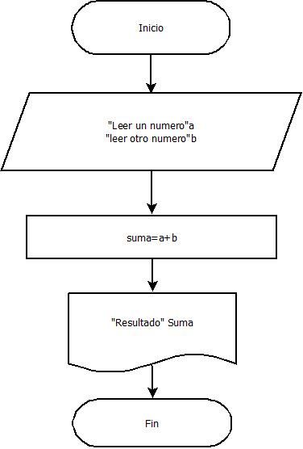

|
ALGORITMOS
|

Un diagrama de flujo es una representación gráfica de un proceso, algoritmo o sistema, que utiliza símbolos estandarizados para mostrar los pasos y las decisiones en secuencia. Es una herramienta fundamental en programación, ingeniería y administración, ya que permite visualizar de manera clara y lógica la resolución de un problema o la ejecución de un procedimiento.
El símbolo más utilizado es el óvalo o rectángulo redondeado, que representa el inicio o el fin del proceso. Dentro de él se escribe "Inicio" o "Fin". El rectángulo se emplea para acciones o procesos, como cálculos o asignaciones de variables. El rombo (o diamante) indica una decisión condicional (sí/no, verdadero/falso), y de él salen dos o más ramas según el resultado.
Otras formas importantes incluyen el paralelogramo, que representa entrada o salida de datos (por ejemplo, leer un valor o mostrar un mensaje en pantalla). El círculo o conector se usa para unir secciones del diagrama cuando este ocupa varias páginas o se ramifica. El hexágono o rectángulo con ondas inferior representa un bucle o iteración, aunque a veces se define con un rombo modificado.
Para trazar un diagrama de flujo se siguen reglas básicas: las flechas indican el flujo de control (dirección de avance), los símbolos se conectan en orden, y cada figura tiene un propósito definido. Se recomienda que el diagrama sea legible, que evite cruces innecesarios y que tenga un único punto de inicio y uno (o varios) de final. Los diagramas de flujo son independientes del lenguaje de programación y ayudan a planificar antes de escribir código.
En la práctica, existen varios niveles de detalle: los macro-diagramas muestran una visión general (pocos símbolos), mientras que los micro-diagramas detallan cada instrucción. Actualmente, herramientas como Lucidchart, Draw.io, o incluso papel y lápiz, permiten crearlos. Dominar los diagramas de flujo mejora la capacidad de análisis y comunicación de ideas, siendo un paso previo esencial para construir algoritmos eficaces.